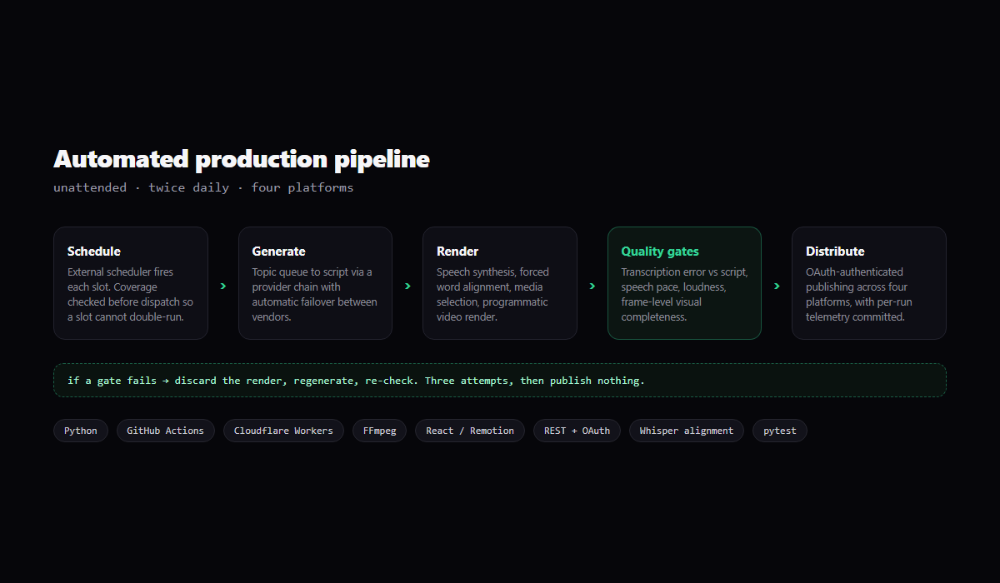

Automated Production Pipeline
A system that generates, renders, checks and publishes content twice a day without anyone touching it. Built and operated solo since June 2026. The interesting part is not the pipeline, it is what keeping it alive taught me about the difference between a green status check and a working system.

The problem
Anyone can write a script that produces one artefact. The difficulty is a system that produces one every twelve hours, for months, while nobody is watching, on free infrastructure, against third-party services that rate-limit, expire credentials, change their terms and occasionally just fail.
I built this to find out what that actually takes. It turned out to be a much better teacher than any of my coursework, because coursework never wakes you up to a credential that expired at 3am.
Approach
Assume every dependency will fail. Model and speech generation both run through provider chains that fail over automatically. When one vendor's quota is exhausted or its billing lapses, the next takes over and output quality degrades rather than production stopping. This was not foresight, it was a lesson: a single-provider chain once took the system down for two days because its only fallback had been retired months earlier and nobody had noticed.
Credentials are the number one outage cause, so treat them as a system. Five APIs, each with its own OAuth flow, scope requirements and expiry behaviour. There is now scope auditing, an expiry clock with alerting, and a check that verifies a re-issued token carries every scope the pipeline needs. That last one exists because a token was once re-issued with one scope missing, which silently disabled the analytics reporting for ten weeks while every run still reported success.
Schedule from outside the platform that runs the work. The in-platform scheduler skipped runs, so scheduling moved to an external worker that checks whether a slot is already covered before dispatching, making a double-fire impossible.
The part that matters, gates the system applies to itself
Automated output is only as trustworthy as its checks. Every release is measured before it goes anywhere: transcription error against the source script, speech pace, loudness and peak level, duration, and frame-level visual completeness. If a check fails the output is discarded and regenerated, up to three attempts. If all three fail, nothing is published. A missing release is a much smaller problem than a bad one.
The thresholds are set from measured data rather than intuition, and where possible each output is judged against itself. The visual check compares a frame's detail against that same piece's median, so a deliberately sparse style cannot trip it and there is no absolute number to maintain as the design evolves.
The bug I learned the most from
Output was shipping with blank frames over live audio. Every signal was green, and every one of them was true: the run log confirmed all media assets had been fetched and staged, the black-frame detector reported no black frames, and the performance data suggested engagement was healthy.
All three were blind to the same thing. The assets were staged but displayed at the wrong time. The frames were not black, they were an empty dark gradient. And the engagement figures were averages over output whose first seconds were empty.
I found it by extracting frames from a published file and reading them: nothing at all for the first five and a half seconds, normal from six. The cause was in the alignment between the script and the speech timings. When the transcriber missed the opening words, the code that placed them back on the timeline anchored them to the first word it had heard and filled forward, so the opening lines were positioned several seconds late, on top of the audio that belonged to different words, leaving the start of the piece empty.
The fix distributes those words across the span before the anchor instead, and it ships with a regression test built from the exact failing case. The durable part is not the fix though. It is that the pipeline now renders a contact sheet of every output and refuses to publish anything whose frame is empty when it should not be. The fault survived for weeks not because the checks were wrong, but because none of them looked at the thing a person would have looked at first.
What I took away
- A passing check is not evidence of a working system. It is evidence that one specific question returned the expected answer. Ask whether the set of questions covers what a person would notice in five seconds.
- Silent failures need receipts. Several faults here hid inside steps that were allowed to fail without stopping the run, which is the correct design for a non-essential step and precisely why the outcome has to be recorded and surfaced somewhere.
- Redundancy that has never been exercised is not redundancy. A fallback chain whose alternatives are all dead looks identical to a healthy one until the day it matters.
- Measure against the artefact itself where you can. Self-relative thresholds survive redesigns; absolute ones rot.
Why this is on a machine learning portfolio
Because it is the same argument as the UAV leakage study, made in production instead of in a report. There, a flattering accuracy was an artefact of how the data was split. Here, a healthy dashboard was an artefact of what the checks could see. Both are the same failure: trusting a number without asking what would have to be true for it to be wrong.